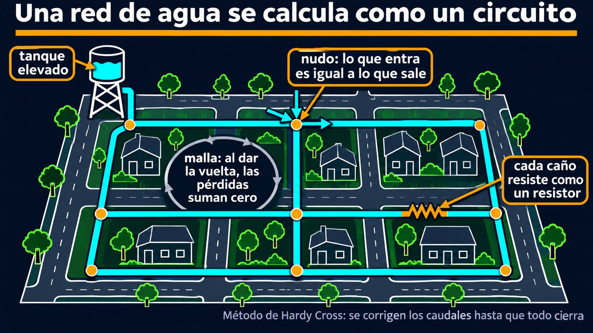

Resistencias hidráulicas en serie y en paralelo
El agua potable de una ciudad no viaja por un caño único: se reparte por una malla de cañerías con cruces y bucles, y en cada esquina tiene varios caminos posibles. ¿Cuánta agua va por cada uno? La pregunta se parece mucho a otra que aparece en cualquier curso de electricidad: cómo se reparte la corriente en un circuito. Y el parecido no es casual.
El libro College Physics de OpenStax escribe el caudal Q entre dos puntos de un caño como la diferencia de presión dividida por una resistencia al flujo R, que incluye todo lo demás que afecta al caudal [1]. Para un flujo laminar de un fluido incompresible en un tubo horizontal de radio uniforme, esa resistencia está dada por la ley de Poiseuille [1]:
La primera ecuación tiene la misma forma que la ley de Ohm, V = R·I. El radio a la cuarta potencia es lo más llamativo: reducir el radio a la mitad multiplica la resistencia por 16 (un cálculo propio), y por eso, como señala el libro, cualquier cambio en el radio tiene un efecto enorme [1]. Es lo que explica que el cuerpo regule el flujo de sangre cambiando el calibre de los vasos, más que la presión [1].
En el diseño de dispositivos de microfluídica se usa esta analogía de manera sistemática. M. Emmerich, F. Costamoling y R. Wille resumen la traducción así: la caída de presión hace de voltaje, el caudal de corriente y la resistencia del canal de resistencia eléctrica; las bombas de caudal o de presión equivalen a fuentes de corriente o de voltaje; la conservación de la masa corresponde a la ley de corrientes de Kirchhoff y la conservación de la energía, a la ley de tensiones [2].
Δp = R · Q, como V = R · I
De ahí salen las reglas de los circuitos (un razonamiento propio). En serie, el mismo caudal pasa por todos los caños, las caídas de presión se suman y las resistencias también: R = R₁ + R₂. En paralelo, todos los caños tienen la misma caída de presión, los caudales se suman y las inversas también: 1/R = 1/R₁ + 1/R₂. Dos caños iguales en paralelo tienen la mitad de la resistencia de uno solo.
Las autopistas y los capilares: el sistema circulatorio aprovecha esta regla. Cada capilar es finísimo, pero hay muchísimos en paralelo, y OpenStax explica que esa ramificación reduce la resistencia lo suficiente como para que la presión no se pierda del todo [1]. Es como repartir el tránsito de una ruta en miles de callecitas.

La ley de Poiseuille vale para flujo laminar. El modelo de la microfluídica se aplica a flujos laminares, totalmente desarrollados, viscosos e incompresibles [2], y funciona bien en esa escala. Pero las redes de agua se calculan con leyes no lineales. Si la pérdida de carga se calcula con Darcy-Weisbach, crece con el cuadrado del caudal:
Estos exponentes son los que usa el curso de redes de agua del programa NPTEL, de los Institutos Indios de Tecnología [3]. Con una ley así, una resistencia ya no es un número fijo: depende del caudal que pasa. Dos caños iguales en paralelo, por ejemplo, no se comportan como K/2, sino como K/4 (un cálculo propio: cada uno lleva la mitad del caudal, y la pérdida depende del cuadrado). Es como un circuito con resistores cuya resistencia crece con la corriente.
Las leyes de Kirchhoff siguen valiendo aunque la relación no sea lineal. En cualquier red se cumplen dos condiciones: el caudal que entra a un nudo es igual al que sale, y la suma algebraica de las caídas de presión alrededor de un circuito cerrado es cero [3]. La segunda dice algo evidente: si volvés al punto de partida, la presión tiene que ser la misma.
Como las ecuaciones no son lineales, las redes se resuelven por aproximaciones sucesivas, y el método más usado es el de Hardy Cross [3]. Se supone una distribución de caudales que respete la continuidad en cada nudo. Después se calcula, para cada malla, cuánto falla la suma de pérdidas, y se corrigen los caudales con:
El proceso se repite hasta que la corrección sea aceptablemente chica [3].
Una herramienta de doble filo: la analogía es una descripción de una dimensión. Da presiones y caudales en cada rama, pero no el detalle del flujo dentro de cada caño. Para eso hacen falta simulaciones completas de dinámica de fluidos, mucho más lentas [2]. Es la clase de compromiso típico de la ingeniería: un modelo simple que responde la pregunta justa.
En flujo laminar, un caño se comporta como un resistor, y una red de caños como un circuito: la presión hace de voltaje y el caudal de corriente. En una red urbana turbulenta, la relación deja de ser lineal, pero las leyes de nudos y mallas siguen en pie, y métodos iterativos como el de Hardy Cross dan la solución. La analogía eléctrica no es solo un recurso didáctico: es lo que se usa para simular dispositivos microfluídicos.
Pregunta para la comunidad: En una casa, abrís la ducha y alguien abre la canilla de la cocina. Con el lenguaje de los circuitos, ¿qué le pasa al caudal de la ducha y por qué? ¿Qué parte de la cañería hace de resistencia en serie compartida?